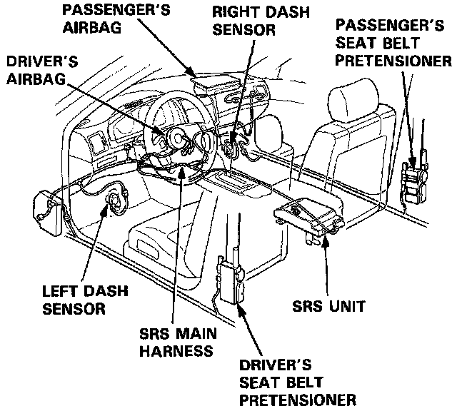
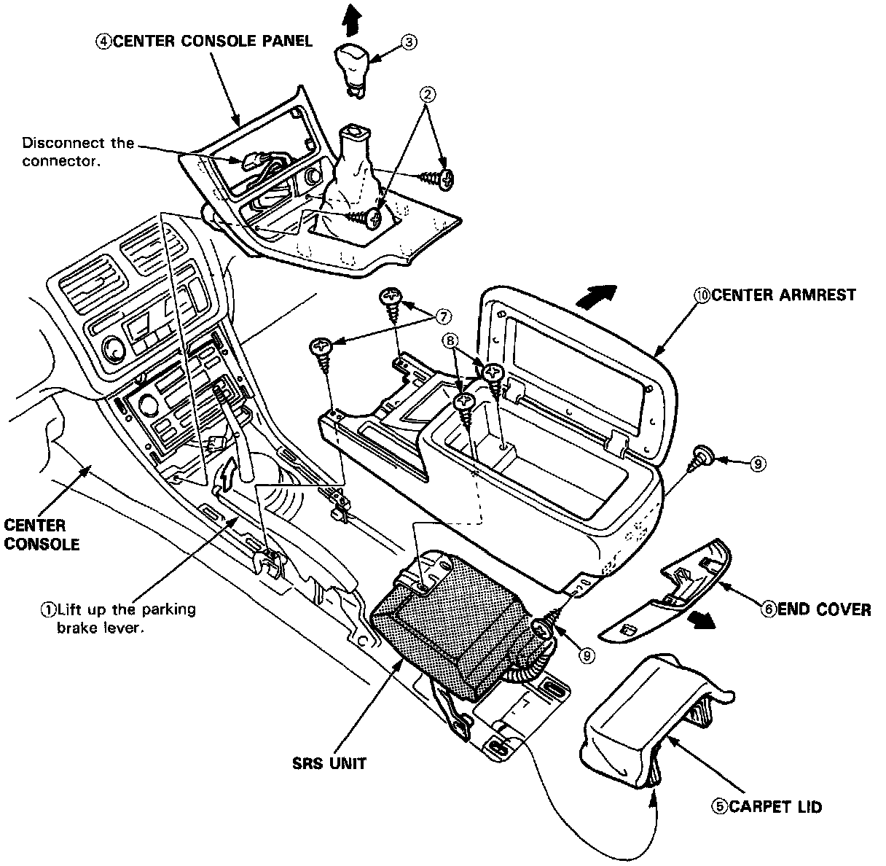

Arm Rest: Service and Repair

NOTE: SRS wire harnesses are routed near the center console panel and center armrest.
CAUTION:
- All SRS wiring harnesses are covered with yellow outer insulation.
- Before disconnecting any part of the SRS wire harness, install the short connectors.
- Replace the entire affected SRS harness assembly if it has an open circuit or damaged wiring.
NOTE:
- Take care not to scratch the dashboard and related parts.
- Do not drop the screws inside the center console.
CAUTION: When prying with a flat tip screwdriver, wrap it with protective tape to prevent damage.

Disassemble in the numbered sequence. Refer to image.
Installation is the reverse of the removal procedure.